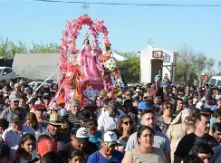

FIESTA DE LAGUNAS DEL ROSARIO

Fiesta de Lagunas del Rosario se festeja para honrar a la Virgen del Rosario, la santa patrona del lugar, y para mantener viva una tradición de casi 300 años de fe, cultura e identidad del secano en el departamento de Lavalle, Mendoza.
La Fiesta Patronal de Lagunas del Rosario es una de las celebraciones religiosas y culturales más importantes del departamento de Lavalle, Mendoza. Se realiza generalmente durante el segundo fin de semana de octubre, en honor a Nuestra Señora del Rosario de las Lagunas, y reúne a numerosos fieles, familias, turistas y agrupaciones gauchas de distintos puntos de la provincia y del país.
Sus orígenes se remontan al año 1609, cuando los sacerdotes jesuitas Juan Pastor y Fabián Martínez impulsaron la construcción de una primera capilla dedicada a la Virgen del Rosario. Con el paso del tiempo, este lugar se convirtió en un importante centro de encuentro religioso y comunitario. La actual capilla, construida en adobe, fue declarada Monumento Histórico Nacional en 1975 y es conocida como la «Catedral del Desierto», debido a su arquitectura y ubicación en el paisaje árido del secano lavallino.
Durante la festividad se desarrollan diferentes actividades religiosas, como misas, bautismos, rezos y procesiones en honor a la Virgen. Uno de los momentos más destacados es la tradicional Peregrinación Gaucha, en la que cientos de jinetes recorren más de 100 kilómetros desde Villa Tulumaya hasta llegar a la capilla, demostrando su fe y devoción.
Además, el evento ofrece propuestas culturales y recreativas, como espectáculos folclóricos, ballets, destrezas criollas, puestos de artesanías y los tradicionales bodegones, donde se pueden disfrutar comidas típicas de la región, especialmente el chivito asado y las empanadas criollas.
Esta celebración tiene una gran importancia para la comunidad huarpe y los habitantes de Lavalle, ya que permite conservar las tradiciones ancestrales, transmitir conocimientos entre generaciones y fortalecer la identidad cultural del departamento. También representa una oportunidad para fomentar el turismo rural y beneficiar económicamente a los pobladores de la zona.
VOLVER A EVENTOS